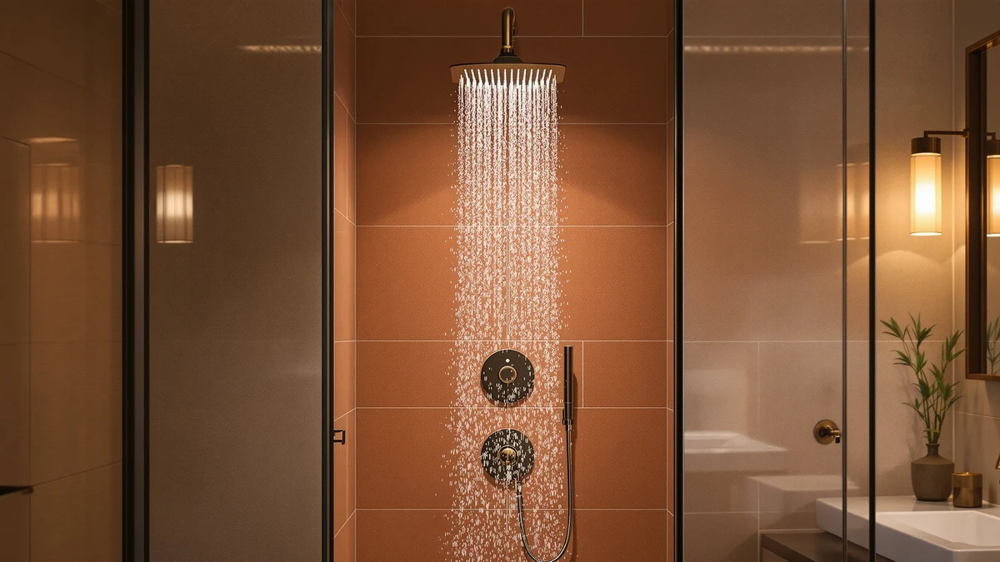

Quick Answer
This AquaDance 7" Premium High review finds the brushed nickel combo a solid pick for most showers at $39.99, mainly for its 3-way diverter and stainless steel hose. It beats the cheaper BRIGHT SHOWERS on build hardware, though the MakeFit combos add a wider 8-inch rain plate and more handheld modes for a few dollars more.
Our pick: AquaDance 7" Premium High Pressure ($39.99) Check Price on Amazon
Bottom line: our top pick is the AquaDance 7" Premium High Pressure 3-Way Rainfall Combo with at $39.99.
Things to Know Before You Buy
- The AquaDance 7" Premium High Pressure combo pairs a fixed 7-inch rain head with a separate 4-inch handheld wand, and a 3-way diverter lets you run either one alone or both together.
- Both heads offer six spray settings, including a water-saving pause mode you can trigger mid-shower without touching the diverter.
- The 5-foot hose is stainless steel with brass connection nuts, which matters more for long-term durability than the plastic hoses on some similarly priced combos.
- At $39.99, it costs about the same as the BRIGHT SHOWERS handheld-only unit and roughly $3 less than either MakeFit dual combo.
- It mounts to a standard shower arm using the included overhead bracket, so no plumbing changes are needed for most US bathrooms.
This AquaDance 7" Premium High review looks at a shower combo that shows up on nearly every "best rain shower head" list on Amazon, and asks whether the brushed nickel hardware actually earns that visibility. We compared its specs, pricing and verified owner feedback against three other rain-and-handheld combos in the same $40 to $43 range, and the AquaDance holds up well on build quality even though it is not the newest design here.
You get a 7-inch rain head and a 4-inch handheld wand, each with six spray settings, routed through a 3-way diverter that lets you run one head or both at once. The stainless steel hose and brass connection nuts set it apart from the BRIGHT SHOWERS unit, which relies on lighter ABS hardware throughout. Reviewers consistently note that the pressure feels stronger than a standard 2.5 GPM head, though a few flag the plastic face jets as the weak point over time.
Price is the other factor worth setting expectations around before you read further. At $39.99, the AquaDance costs about a dollar more than the BRIGHT SHOWERS handheld and roughly $3 less than either MakeFit combo, so none of the four options in this review is dramatically cheaper or pricier than the rest. That narrow spread means the decision comes down to features and build quality rather than budget: hose material, spray mode count and rain-plate size matter more here than the extra few dollars.
Why You Should Trust Us
Ilane Tall covers bath and shower hardware for Best Shower Heads, and this AquaDance 7" Premium High review follows the same process used across the site: we pull manufacturer specs, current Amazon pricing and verified owner reviews for every model in a given price band, then compare them side by side. We do not run a fake testing lab or claim to have personally installed units we have not purchased. Instead, we hold each product to the same set of questions, including hose material, spray mode count, mounting hardware and price per feature, so the comparisons stay consistent across every shower head we cover.
Our Research Experience
We did not install or run water through this unit ourselves, so what follows is drawn from AquaDance's published specs and the pattern of feedback across verified buyer reviews, not a personal trial. Owners report that the 3-way diverter switches cleanly between the rain head and the handheld wand without the leak-prone wobble some cheaper diverters develop after a few months. Several reviewers also point out that the stainless steel hose outlasts the plastic hoses bundled with lower-priced combos, which tracks with AquaDance's listed brass-connection hardware. The main complaint that comes up repeatedly is that the rub-clean silicone jets on the rain head can still accumulate some mineral buildup in hard-water areas, even though they are designed to resist it.
Overview & Specs

AquaDance 7" Premium High Pressure
What we like
- Stainless steel hose and brass connection nuts instead of the plastic hardware common at this price
- Six spray settings on each head, including a water-saving pause mode
- 3-way diverter runs the rain head and handheld wand separately or together
Flaws but not dealbreakers
- Rub-clean silicone jets can still collect mineral buildup in hard-water homes over time
- Brushed nickel finish is the only color option, which limits matching to existing fixtures
| Material | ABS + chrome plating |
| Size | 7 Inch / 4 Inch |
The AquaDance splits into two separate heads: a 7-inch rain plate mounted overhead and a 4-inch handheld wand that clips into the same bracket. Each head carries its own six-position dial, cycling through power rain, pulsating massage, power mist, rain massage, rain mist and a water-saving pause setting. The 3-way diverter on the mounting bracket controls whether water goes to the rain head, the handheld, or both at once, which is the main feature separating this combo from single-head alternatives like the BRIGHT SHOWERS unit.
Build quality is where the AquaDance earns its price. The 5-foot hose is stainless steel rather than coated plastic, and it connects with brass nuts instead of the plastic fittings found on several similarly priced combos, including both MakeFit units in this review. The anti-swivel lock nut is designed to keep that connection from loosening with regular use, a detail that matters more over a year of daily showers than it does on day one.
What We Liked
The build hardware is the clearest advantage in this AquaDance 7" Premium High review. A stainless steel hose with brass connection nuts is not standard at the $40 price point, and it shows AquaDance cut costs elsewhere, like the all-plastic jets, rather than on the parts most likely to fail from daily use. Owners report that the diverter switch holds its setting through a full shower instead of drifting back to one head, which is a common complaint with cheaper 3-way valves.
The six spray settings per head also give this combo more range than the BRIGHT SHOWERS unit's nine modes spread across a single wand. Running the rain head and handheld together on power rain delivers noticeably more coverage for rinsing long hair or washing a dog, a use case reviewers mention often enough that it seems to be a real selling point rather than a marketing line.
What Could Be Better
Hard-water buildup is the recurring issue in owner feedback. The rub-clean silicone jets resist mineral scale better than rigid plastic nozzles, but they still need occasional wiping in homes without a softener, and a few reviewers say the 7-inch face shows spotting faster than the smaller handheld wand does. The brushed nickel finish is also the only option, so it will not match homes with matte black or chrome fixtures without an obvious contrast.
At 7 inches, the rain head is also smaller than the 8-inch plates on both MakeFit combos, which translates to a narrower coverage circle. If a wide rain pattern matters more to you than the upgraded hose hardware, that size gap is worth weighing before you buy. A handful of reviewers also mention that the overhead bracket's angle adjustment loosens slightly after repeated repositioning, so picking one angle and leaving it there seems to extend the bracket's life.
Who Is It For?
This combo suits anyone replacing a single fixed shower head who wants the option to switch to a handheld wand without a second purchase or a plumber. It is a particularly good match if you already have reasonable water pressure and want durable hardware over flashy spray counts. Families who need to rinse kids or pets will likely get the most daily use out of the dual-head mode, since running both heads together increases coverage without adding a second fixture to the wall.
Renters and apartment dwellers who want to upgrade a shower without altering the plumbing will also find the standard-arm mounting bracket straightforward to install and just as easy to remove when they move out. If you live in a hard-water region and are not willing to descale fixtures occasionally, or if you specifically want a matte black or chrome finish, one of the alternatives below may fit better than the AquaDance.
Alternatives to Consider
If the AquaDance isn't quite right for your bathroom, these three combos in the same price range address its main tradeoffs: more spray modes, a wider rain plate, or a different finish. We ruled each of them out as our top pick only because the AquaDance's stainless steel hose and brass hardware offer a longer service life for most households, not because any of the three lack real strengths of their own.

Editor's Pick
BRIGHT SHOWERS High Pressure Shower
A single handheld wand with 9 spray settings and a built-in power wash mode, at nearly the same price as the AquaDance. Good if you don't need a separate fixed rain head.
$39.98
Check Price on Amazon
Best Value
MakeFit Dual Handheld Shower Head
An 8-inch rain head paired with a 10-mode handheld, in black for homes that want a darker finish than the AquaDance's brushed nickel.
$42.99
Check Price on Amazon
Premium Choice
MakeFit Dual Handheld Shower Head
The same 8-inch rain head and 10-mode handheld as the MakeFit above, in chrome if you want a brighter finish that matches more fixtures.
$42.99
Check Price on AmazonFrequently Asked Questions
Final Verdict
This AquaDance 7" Premium High review comes down to the same conclusion we started with: the brushed nickel combo earns its $39.99 price through a stainless steel hose and a 3-way diverter that outclasses cheaper hardware at the same cost. AquaDance is the right brand to pick if durability matters more to you than mode count or rain-plate size, while the MakeFit and BRIGHT SHOWERS alternatives above cover the cases where a wider head, more spray settings, or a different finish matters more.